FAIR Data Point — User ManualFAIR Data Point — Manual do Usuário
A practical guide to installing a FAIR Data Point (FDP) and using it: browsing and searching metadata, publishing records, and administering schemas, access policies, licenses, and users. Um guia prático para instalar um FAIR Data Point (FDP) e usá-lo: navegar e pesquisar metadados, publicar registros e administrar esquemas, políticas de acesso, licenças e usuários.
- Install in 5 stepsInstalar em 5 passos
- Signing in & rolesEntrar & papéis
- Browsing & searchingNavegar & pesquisar
- Publishing metadataPublicar metadados
- SchemasEsquemas
- Access policies (ODRL)Políticas de acesso (ODRL)
- LicensesLicenças
- UsersUsuários
- Settings & maintenanceConfigurações & manutenção
- Personal access & APIAcesso pessoal & API
- TroubleshootingSolução de problemas
1. Install in 5 stepsInstalar em 5 passos
You need Docker + Docker Compose, uv, Node.js ≥ 20, and two clones side by side: fdp-server/ and fdp-client/.
Você precisa de Docker + Docker Compose, uv, Node.js ≥ 20, e dois clones lado a lado: fdp-server/ e fdp-client/.
- Backing services — from
fdp-server/:docker compose -f deploy/compose.yaml up -d. Starts GraphDB (:7200), PostgreSQL (:5432) and Keycloak (:8080). Serviços de apoio — emfdp-server/:docker compose -f deploy/compose.yaml up -d. Inicia o GraphDB (:7200), o PostgreSQL (:5432) e o Keycloak (:8080). - GraphDB repository — open localhost:7200 → Setup → Repositories → Create → a repository with ID
fdp. Repositório GraphDB — abra localhost:7200 → Setup → Repositories → Create → um repositório com IDfdp. - Server — from
fdp-server/: copy.env, thenuv sync --extra dev,uv run fdp db migrate,uv run fdp profile apply ./profiles/default, anduv run fastapi dev src/fdp/main.py(→:8000). Servidor — emfdp-server/: copie o.env, depoisuv sync --extra dev,uv run fdp db migrate,uv run fdp profile apply ./profiles/defaulteuv run fastapi dev src/fdp/main.py(→:8000). - Client — from
fdp-client/:cp .env.example .env,npm install,npm run dev(→:5173). Cliente — emfdp-client/:cp .env.example .env,npm install,npm run dev(→:5173). - Open localhost:5173 and sign in with
admin/admin. Abra localhost:5173 e entre comadmin/admin.
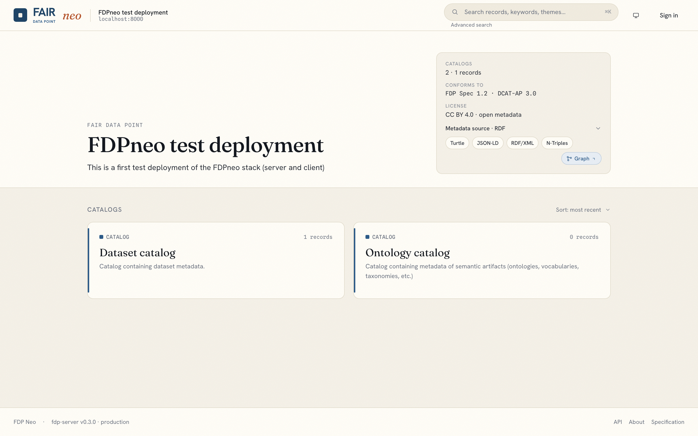
2. Signing in & rolesEntrar & papéis
Click the avatar / Sign in in the top-right. You're redirected to the identity provider (Keycloak), then back. What you can do depends on your role: Clique no avatar / Entrar no canto superior direito. Você é redirecionado ao provedor de identidade (Keycloak) e depois de volta. O que você pode fazer depende do seu papel:
| Role | Can do |
|---|---|
| Anonymous | Browse and search published records; run SPARQL queries; view metrics. |
| Steward | All of the above, plus create/edit/delete their own records, manage publication state, and use the "My data" dashboard. |
| Admin | Everything, plus manage SHACL schemas, resource types, ODRL policies, licenses, instance settings, users, and factory reset. |
| Papel | Pode |
|---|---|
| Anônimo | Navegar e pesquisar registros publicados; executar consultas SPARQL; ver métricas. |
| Steward | Tudo acima, mais criar/editar/excluir seus próprios registros, gerenciar o estado de publicação e usar o painel "Meus dados". |
| Admin | Tudo, mais gerenciar esquemas SHACL, tipos de recurso, políticas ODRL, licenças, configurações da instância, usuários e reset de fábrica. |
Dev users: admin/admin (admin + steward), alice/alice (steward), bob/bob (anonymous-equivalent). Your identity, roles, and a Manage account link to the IdP live under avatar → Profile. Passwords and email are managed in the identity provider, not the FDP.
Usuários de desenvolvimento: admin/admin (admin + steward), alice/alice (steward), bob/bob (equivalente a anônimo). Sua identidade, papéis e um link Gerenciar conta para o IdP ficam em avatar → Perfil. Senhas e e-mail são gerenciados no provedor de identidade, não no FDP.
3. Browsing & searchingNavegar & pesquisar everyone / todos
- Browse from the home page: the catalog tree and record cards. Click any record to open its detail page — properties, links, breadcrumbs to its parent catalog, and (for stewards/admins) its publication state.
- Search (top bar or the Search page): free-text query plus facets (type, license, …) rendered from the live index. Results are policy- and publication-state-aware — anonymous users see only published records. Signed-in users can save a search; admins can mark one shared.
- SPARQL playground: run SPARQL 1.1 queries directly against the metadata, with query history and result tables.
- Navegar a partir da página inicial: a árvore de catálogos e os cartões de registro. Clique em qualquer registro para abrir sua página de detalhes — propriedades, links, trilha de navegação até o catálogo pai e (para stewards/admins) seu estado de publicação.
- Pesquisar (barra superior ou página de Busca): consulta em texto livre mais facetas (tipo, licença, …) renderizadas a partir do índice. Os resultados respeitam política e estado de publicação — usuários anônimos veem apenas registros publicados. Usuários autenticados podem salvar uma busca; admins podem marcá-la como compartilhada.
- Playground SPARQL: execute consultas SPARQL 1.1 diretamente sobre os metadados, com histórico e tabelas de resultados.
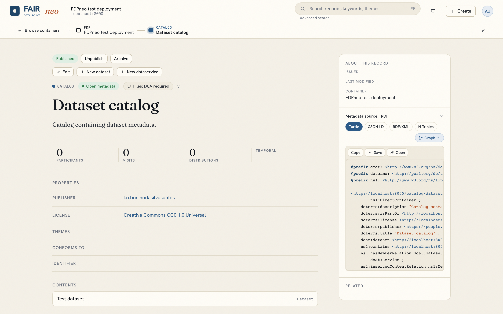
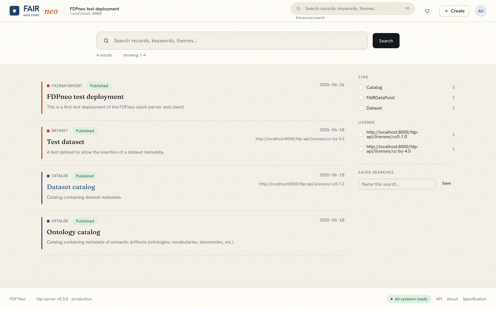
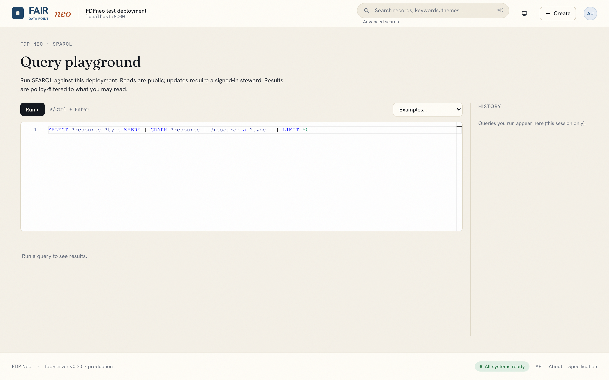
4. Publishing metadataPublicar metadados stewards & admins
FDP metadata follows DCAT: a Catalog contains Datasets, which contain Distributions (a deployment may define more types). Records are created top-down. Os metadados do FDP seguem o DCAT: um Catálogo contém Conjuntos de dados, que contêm Distribuições (uma implantação pode definir mais tipos). Os registros são criados de cima para baixo.
Create a recordCriar um registro
- Click + Create (top bar) for a top-level Catalog, or open an existing record and use its "new child" link (e.g. a dataset under a catalog).
- Fill the form. Fields are driven by the deployment's SHACL schema for that type (title, description, publisher, keywords, …). Required fields are marked.
- Two managed-document pickers: Access policy (
dct:rights) — a published ODRL policy governing read/modify; and License (dct:license) — a published license or a pasted IRI. - Save. The record is created as a draft.
- Clique em + Criar (barra superior) para um Catálogo de nível superior, ou abra um registro existente e use o link "novo filho" (por exemplo, um conjunto de dados dentro de um catálogo).
- Preencha o formulário. Os campos são determinados pelo esquema SHACL da implantação para aquele tipo (título, descrição, publicador, palavras-chave, …). Os campos obrigatórios são marcados.
- Dois seletores de documentos gerenciados: Política de acesso (
dct:rights) — uma política ODRL publicada que governa leitura/modificação; e Licença (dct:license) — uma licença publicada ou um IRI colado. - Salve. O registro é criado como rascunho.
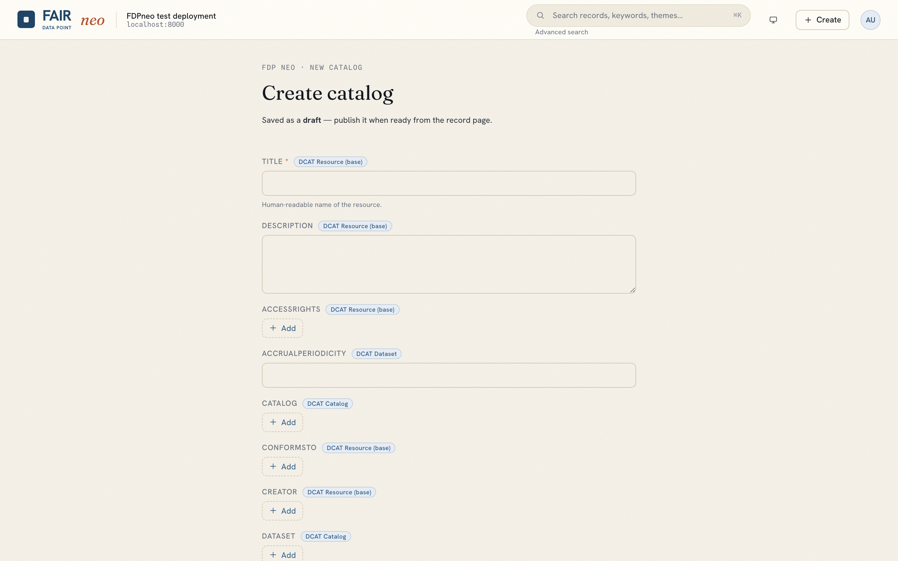
Publish / lifecyclePublicar / ciclo de vida
A record moves through draft → published → archived. Open the record and use the state control (owner or admin) to publish it. Only published records are visible to anonymous users and offered for assignment elsewhere. Um registro passa por rascunho → publicado → arquivado. Abra o registro e use o controle de estado (dono ou admin) para publicá-lo. Apenas registros publicados são visíveis a usuários anônimos e oferecidos para uso em outros lugares.
My dataMeus dados
The Dashboard ("My data") lists records you own or may edit, with their state, plus a Recently updated section — your working set at a glance. O Painel ("Meus dados") lista os registros que você possui ou pode editar, com seu estado, mais uma seção Atualizados recentemente — seu conjunto de trabalho num relance.
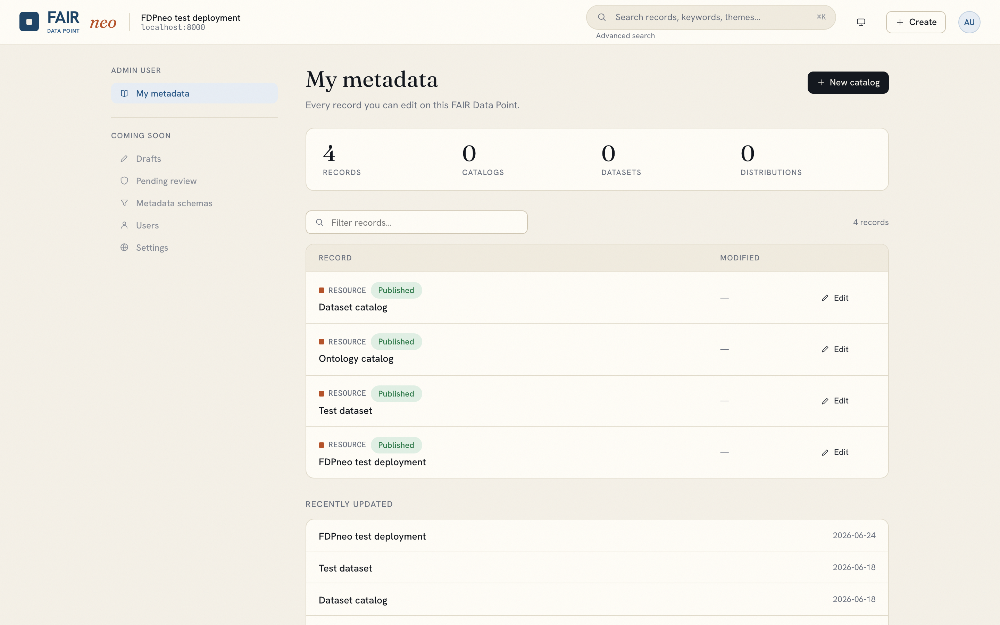
5. SchemasEsquemas admins
Open avatar → Schemas. Records are validated against SHACL shapes you manage here. Abra avatar → Esquemas. Os registros são validados contra shapes SHACL que você gerencia aqui.
- List / author / publish shapes as Turtle (text-first editor), with versioning shown as
v{n}at a stable IRI. - Each schema needs an ID (name) — a short, URL-safe identifier shown live as
/schemas/<id>; it is normalized for you and locked once saved. - Validate a sample record against a saved shape before relying on it.
- The visual SHACL editor (node canvas + form builder) authors shapes graphically, with a live Turtle preview and round-trip import/export.
- Resource types (avatar → Resource types): register the deployment's record types and their child-link relationships, each pointing at a published shape. New types appear across the app without a rebuild.
- Listar / criar / publicar shapes em Turtle (editor de texto), com versionamento mostrado como
v{n}em um IRI estável. - Cada esquema precisa de um ID (nome) — um identificador curto e seguro para URL, mostrado ao vivo como
/schemas/<id>; ele é normalizado automaticamente e bloqueado após salvar. - Validar um registro de exemplo contra um shape salvo antes de confiar nele.
- O editor visual de SHACL (canvas de nós + construtor de formulário) cria shapes graficamente, com pré-visualização Turtle ao vivo e importação/exportação reversível.
- Tipos de recurso (avatar → Tipos de recurso): registre os tipos de registro da implantação e suas relações de filho, cada um apontando para um shape publicado. Novos tipos aparecem em todo o app sem recompilar.
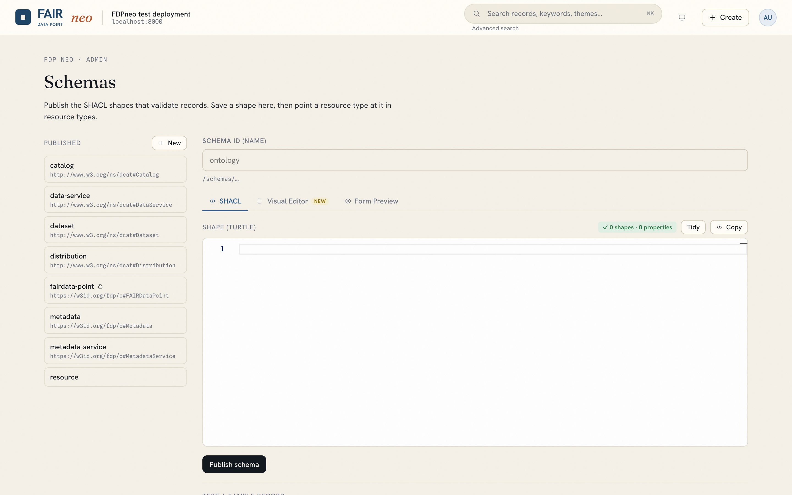
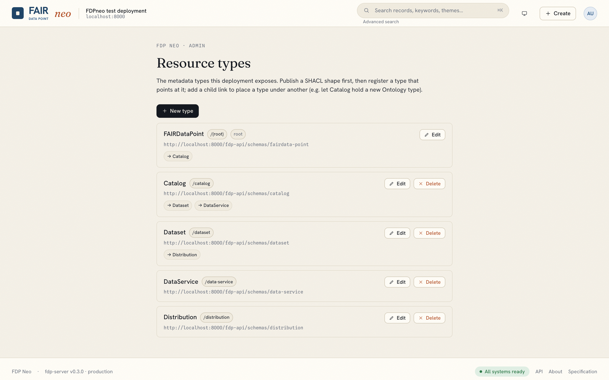
6. Access policies — ODRLPolíticas de acesso — ODRL admins
Open avatar → Policies. An FDP controls access through ODRL Offers: a record opts into a policy via dct:rights, and the server's policy decision point enforces it.
Abra avatar → Políticas. Um FDP controla o acesso por meio de Offers ODRL: um registro adere a uma política via dct:rights, e o ponto de decisão de política do servidor a aplica.
- The guided composer builds an Offer from the FDP profile only: pick an action (read/modify/delete/distribute), add permissions/prohibitions, and attach constraints (e.g. role =
steward, a party, or a time window). It cannot produce out-of-profile policies. - A live Turtle preview and inline validation show exactly what will be stored; Validate runs the server's profile check.
- Save / publish / delete managed policies. Published policies appear in the record form's Access policy picker.
- O compositor guiado monta um Offer apenas a partir do perfil FDP: escolha uma ação (ler/modificar/excluir/distribuir), adicione permissões/proibições e anexe restrições (por exemplo, papel =
steward, uma parte, ou uma janela de tempo). Ele não consegue produzir políticas fora do perfil. - Uma pré-visualização Turtle ao vivo e validação em linha mostram exatamente o que será armazenado; Validar executa a verificação de perfil do servidor.
- Salvar / publicar / excluir políticas gerenciadas. Políticas publicadas aparecem no seletor Política de acesso do formulário de registro.
system-default) granting public read and steward modify — the baseline until you author your own.
O sistema vem com um Offer padrão (system-default) que concede leitura pública e modificação por stewards — a linha de base até você criar a sua.
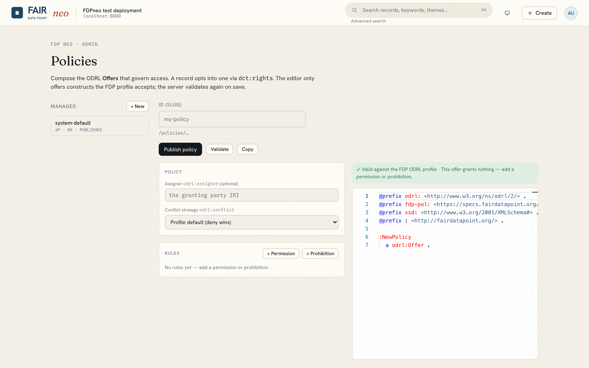
7. LicensesLicenças admins
Open avatar → Licenses. Curate reusable license documents (e.g. CC BY 4.0, CC0) that records reference via dct:license. Each has a title, an optional canonical IRI (dct:source), and a description. Published licenses appear in the record form's License picker. Licenses are descriptive only — they are not access policy.
Abra avatar → Licenças. Mantenha documentos de licença reutilizáveis (por exemplo, CC BY 4.0, CC0) que os registros referenciam via dct:license. Cada um tem um título, um IRI canônico opcional (dct:source) e uma descrição. Licenças publicadas aparecem no seletor Licença do formulário. Licenças são apenas descritivas — não são política de acesso.
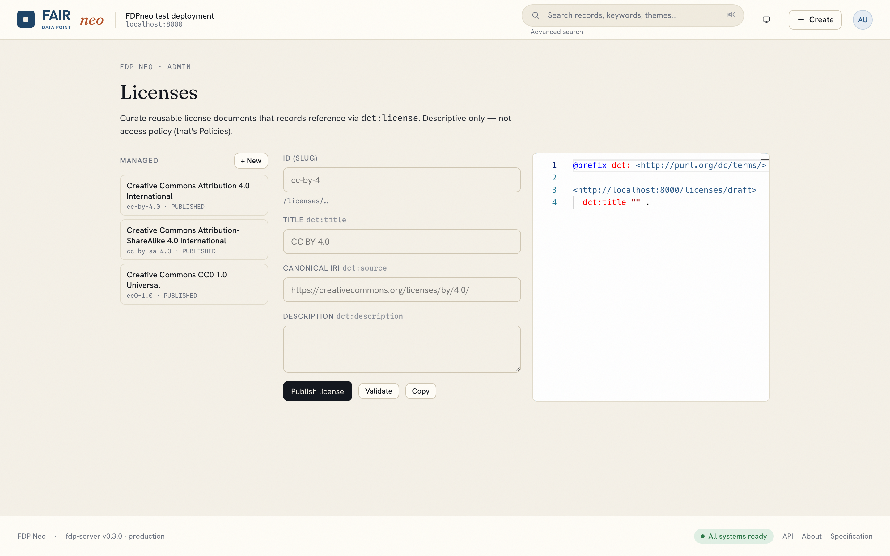
8. UsersUsuários admins, when enabled / quando habilitado
Open avatar → Users (visible only when the user-management facade is configured). Abra avatar → Usuários (visível apenas quando a fachada de gerenciamento de usuários está configurada).
- Search the directory; see each user's email, roles, and enabled status.
- Edit roles (
steward/admin) and enable/disable a user. - Invite a new user — they receive an email to set a password and verify (no passwords pass through the FDP).
- Delete a user.
- Pesquisar o diretório; ver e-mail, papéis e status de habilitação de cada usuário.
- Editar papéis (
steward/admin) e habilitar/desabilitar um usuário. - Convidar um novo usuário — ele recebe um e-mail para definir uma senha e verificar (nenhuma senha passa pelo FDP).
- Excluir um usuário.
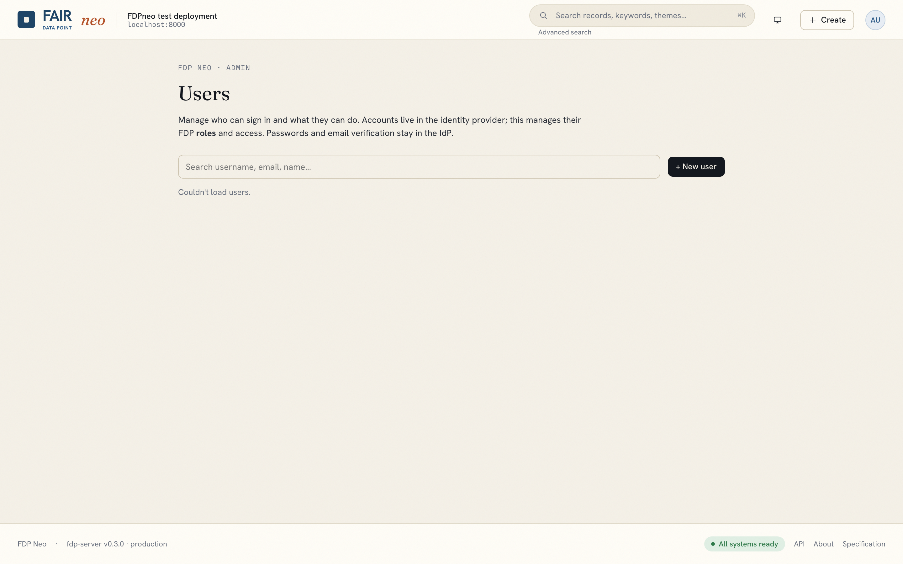
9. Settings & maintenanceConfigurações & manutenção admins
- Settings (avatar → Settings): per-key configuration the server exposes — branding, search-filter config, form autocomplete sources, etc., edited as JSON and validated server-side.
- Metrics dashboard: anonymous, GDPR-safe usage metrics — summary, time series, top resources, and (if a GeoIP database is configured) geography.
- Factory reset: re-applies the deployment profile. Destructive — it restores schemas/policies to the profile baseline.
- Configurações (avatar → Configurações): configuração por chave que o servidor expõe — identidade visual, configuração de filtros de busca, fontes de autocompletar de formulários, etc., editadas como JSON e validadas no servidor.
- Painel de métricas: métricas de uso anônimas e em conformidade com a LGPD/GDPR — resumo, séries temporais, principais recursos e (se um banco GeoIP estiver configurado) geografia.
- Reset de fábrica: reaplica o perfil da implantação. Destrutivo — restaura esquemas/políticas à linha de base do perfil.
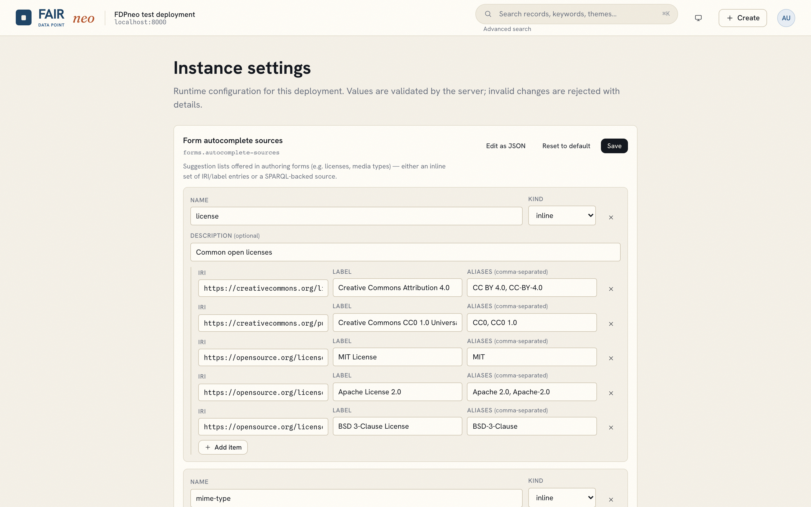
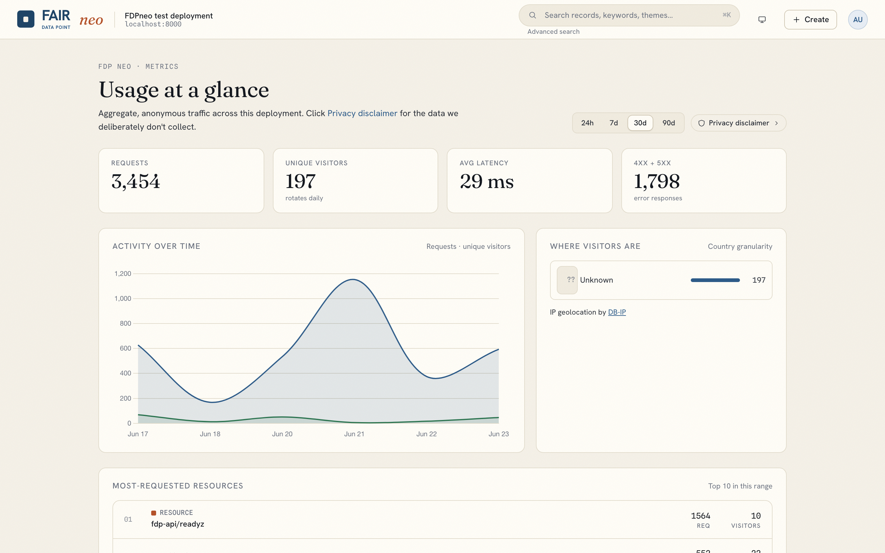
10. Personal access & APIAcesso pessoal & API everyone signed in / autenticados
- Profile (avatar → Profile): your identity and roles, with a deep link to the IdP account console for password/email changes.
- Access tokens (avatar → Access tokens): create personal API keys to call the FDP API from scripts; revoke them anytime.
- The full REST/LDP API is documented at the server's
…/docs(OpenAPI). Records are dereferenceable Linked Data — a record's URL is its identifier.
- Perfil (avatar → Perfil): sua identidade e papéis, com um link direto para o console de conta do IdP para alterar senha/e-mail.
- Tokens de acesso (avatar → Tokens de acesso): crie chaves de API pessoais para chamar a API do FDP a partir de scripts; revogue-as a qualquer momento.
- A API REST/LDP completa está documentada em
…/docsdo servidor (OpenAPI). Os registros são Linked Data desreferenciáveis — a URL de um registro é seu identificador.
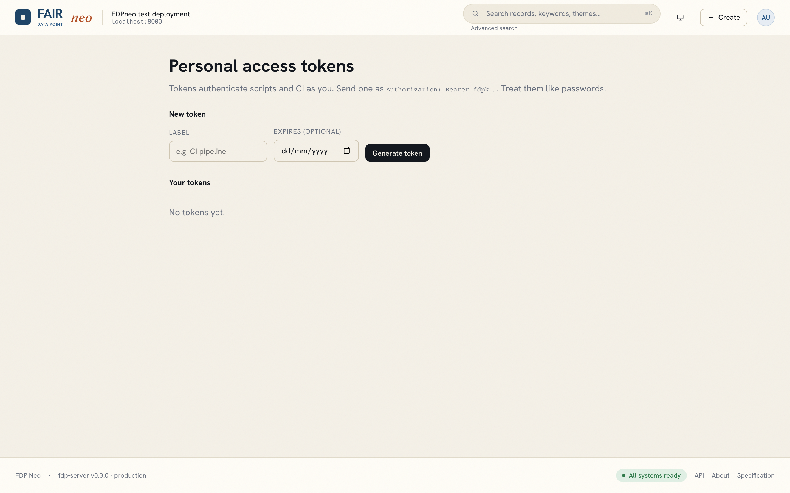
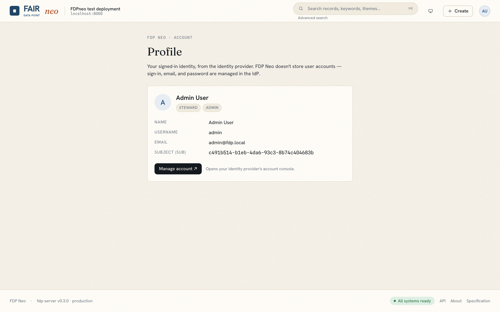
11. TroubleshootingSolução de problemas
| Symptom | Likely cause & fix |
|---|---|
| "Server is unreachable" on save | CORS/origin mismatch, or a server error without CORS headers. Confirm the origin coupling; check the server logs / GET /readyz. |
| Login loops or "invalid redirect" | The Keycloak client redirect URI doesn't include your client origin. Add it in the realm. |
| Search returns nothing / errors | PostgreSQL is down or the index is empty. Check Postgres; run uv run fdp search reindex. |
| "policy denies modify" when creating a record | The root access policy isn't resolving. Ensure the profile is applied and GET /policies/system-default returns 200 (PUBLISHED). |
| Newly written record looks empty when fetched | Drafts aren't served anonymously — fetch with a bearer token, or publish it. |
| No "Users" menu | The user-management facade isn't configured — set FDP_IDP_ADMIN_*. |
| Sintoma | Causa provável & correção |
|---|---|
| "Servidor inacessível" ao salvar | Incompatibilidade de CORS/origem, ou erro do servidor sem cabeçalhos CORS. Confirme o acoplamento de origem; verifique os logs do servidor / GET /readyz. |
| Login em loop ou "redirect inválido" | O redirect URI do cliente Keycloak não inclui a origem do seu cliente. Adicione-a no realm. |
| Busca não retorna nada / dá erro | O PostgreSQL está fora do ar ou o índice está vazio. Verifique o Postgres; execute uv run fdp search reindex. |
| "política nega modificação" ao criar um registro | A política de acesso raiz não está resolvendo. Garanta que o perfil foi aplicado e que GET /policies/system-default retorna 200 (PUBLISHED). |
| Registro recém-criado aparece vazio ao buscar | Rascunhos não são servidos anonimamente — busque com um token bearer, ou publique-o. |
| Sem menu "Usuários" | A fachada de gerenciamento de usuários não está configurada — defina FDP_IDP_ADMIN_*. |